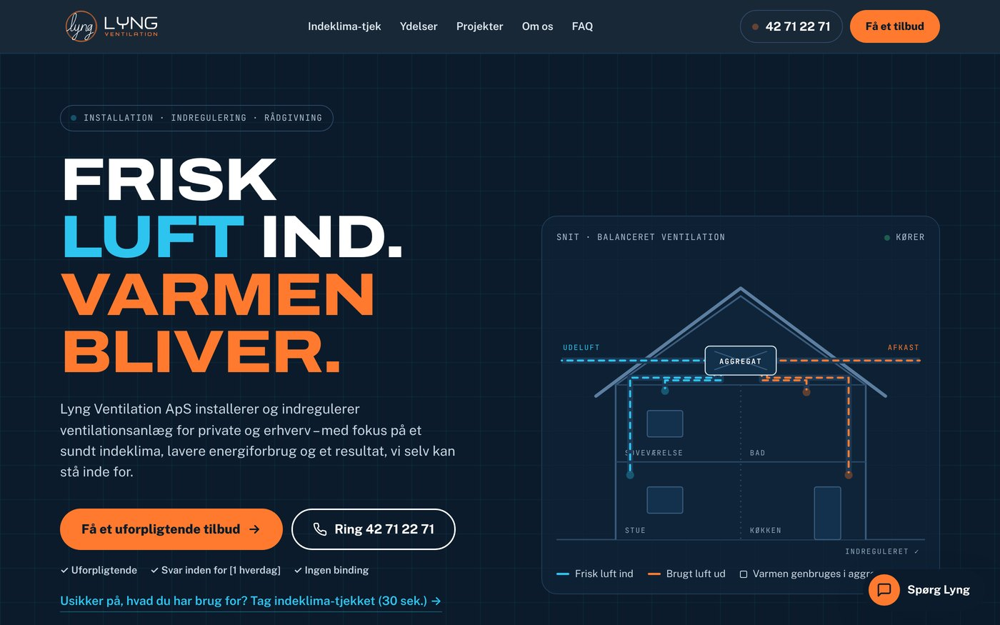

Hjemmeside Besøg siden ↗Hjemmeside · Kundeprojekt
Lyng Ventilation: et teknisk produkt, forklaret enkelt
Ny hjemmeside til et ventilationsfirma i Greve. Et animeret snit af huset viser, hvordan anlægget virker, et indeklima-tjek lader de besøgende krydse deres egne problemer af, og AI-chatbotten "Spørg Lyng" er bygget til at svare på kundernes spørgsmål.
Min rolle: Koncept, UX, design og kode, sammen med Claude. Leveret med designsystem og brandmanual.
Under udvikling: billeder og kundeudtalelser kommer, når firmaet leverer dem.